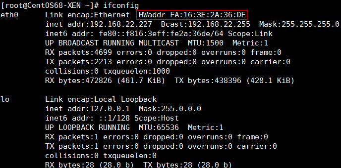
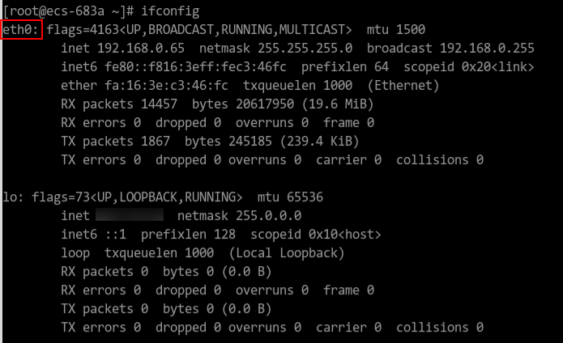
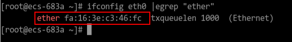
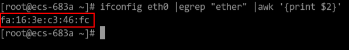
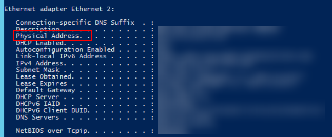

This section describes how to obtain the MAC address of an ECS.

The MAC address of an ECS cannot be changed.
Linux (CentOS 6)
- Log in to the Linux ECS.
- Run the following command to view the MAC address of the ECS:
ifconfig
Figure 1 Obtaining the MAC address

Linux (CentOS 7)
- Log in to the Linux ECS.
- Run the following command to view the MAC address of the ECS:
ifconfig
Figure 2 Obtaining the NIC information
 - Run the following command to view the MAC address of NIC eth0:
ifconfig eth0 |egrep "ether"
Figure 3 Obtaining the MAC address of eth0
 - Obtain the returned MAC address.
ifconfig eth0 |egrep "ether" |awk '{print $2}'
Figure 4 Obtaining the MAC address of eth0

Windows
- Press Win+R to start the Run text box.
- Enter cmd and click OK.
- Run the following command to view the MAC address of the ECS:
ipconfig /all
